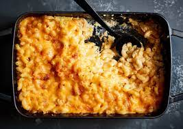

Best Recipe for Mac and Cheese
This is a recipe for one of the best mac and cheese dishes that will have you coming for seconds! It's easy to make and is extremely delicious!

Ingredients
- ¼ cup butter
- 2 ½ tablespoons all-purpose flour
- 3 cups milk
- 2 cups shredded sharp Cheddar cheese
- ½ cup grated Parmesan cheese
- 2 tablespoons butter
- ½ cup bread crumbs
- 1 pinch paprika
Directions
- Preheat the oven to 350 degrees F (175 degrees C).
- Cook macaroni according to the package directions. Drain.
- Melt butter in a medium skillet over low heat. Gradually add flour, whisking until well combined. Slowly pour in milk, whisking constantly until smooth. Stir in cheeses, and cook over low heat until cheese is melted and the sauce is a little thick. Put macaroni in large casserole dish, and pour sauce over macaroni. Stir well.
- Melt butter in a skillet over medium heat. Add breadcrumbs and brown. Spread over the macaroni and cheese to cover. Sprinkle with a little paprika.
- Bake in the preheated oven for 30 minutes. Serve.
Nutrition Facts
Per Serving:
845 calories; protein 36.9g; carbohydrates 65.3g; fat 48.2g; cholesterol 141.6mg; sodium 881.2mg.